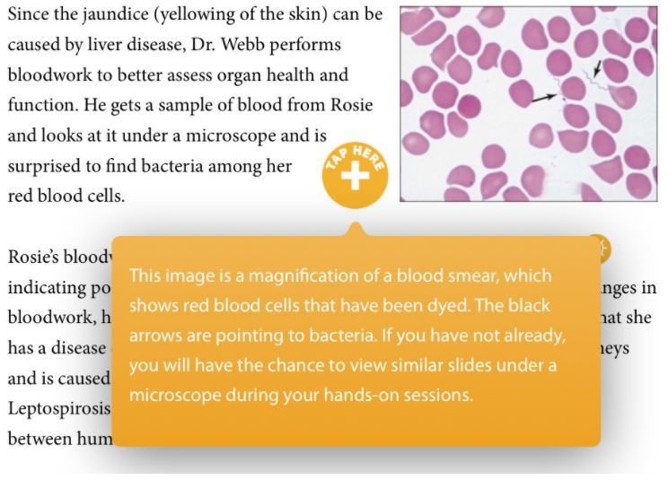
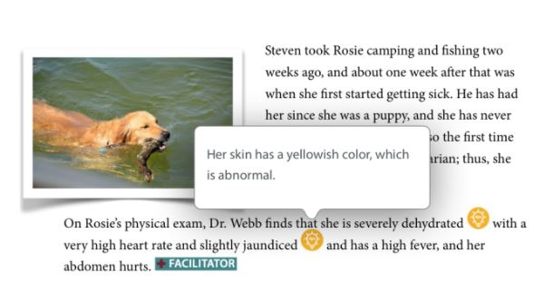

Purpose: This program’s primary purpose is to introduce students to healthcare careers via case-based learning sessions and hands-on engagement. In addition, we aim to address the disparity in access to healthcare in Washington’s rural communities. Our hope is to increase the number of students interested in pursuing a health degree, especially students with a desire to return to underserved communities to practice healthcare.
Analysis
Audience: Begins with students in 7th grade and continues following them through 9th grade.
Reading Level: Some students are reading at a 2nd-grade or 3rd-grade level. Will need to utilize appropriate and correct medical and scientific terminology while providing definitions and foundations for students who read at a lower level.
Experience: No prior experience with case-based learning sessions and little-to-no experience with STEM-oriented labs. Will need to explain the purpose of this style of learning and to establish expectations for students in case-based learning sessions.
Stakeholders: Students and their families, school principals and teachers, outreach program grant funders, WSU and EWU faculty.
Design
Student-Specific Objectives
Cognitive: Understand the definition of a zoonotic disease
Affective: Recognize that you are capable of pursuing careers the healthcare fields; understand the importance of volunteering and community involvement; identify character traits that successful healthcare professionals possess (weaved throughout all cases)
Psychomotor: Be able to focus a microscope on slides and identify bacteria and red blood cells
Program-Specific Objectives
Increase student interest in STEM fields, particularly in healthcare
Decrease disparity in healthcare availability in rural settings by encouraging students to return to their community to practice
Development
Author material; find images or suggestions for images
Frequent communication with SMEs regarding material
Incorporation of objectives and outcomes
Send to graphic designer for final artistic polish

Our designer placed interactive buttons to provide interactive elements and informaiton.
Implementation
All four cases (nine sessions) and all lab sessions were presented to demographically similar students for beta-testing
Students provided good feedback regarding cases: Terminology still too high-level and more interactive elements are needed
Incorporation of objectives and outcomes
Send to graphic designer for final artistic polish

More interactive elements and defitions were added based on student feedback
Evaluation
I utilized the feedback to update the cases
The mentors believed more training material was needed, so I created more prompts and a “tips” page for mentors, in addition to a full day of training
Students met all student-specific objectives and felt that the labs and cases were aligned